Yoto shelf
50 playlists · 626 songs · 24h 00m — ranked for a 2-year-old with a speech delay, speech value first, then age fit.

His home language, and the only set built around stated therapy goals — 樂在課中's songs each name their target. Start here.
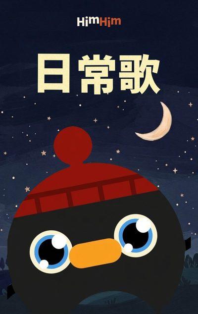
Morning to bedtime in Cantonese. Routines are where words stick, because they repeat at the same time and place.

Animal names and sounds — the fastest imitation win in any language.

The Hong Kong classics, hand-picked. Folk recordings rather than a Yoto card, hence lower fidelity.
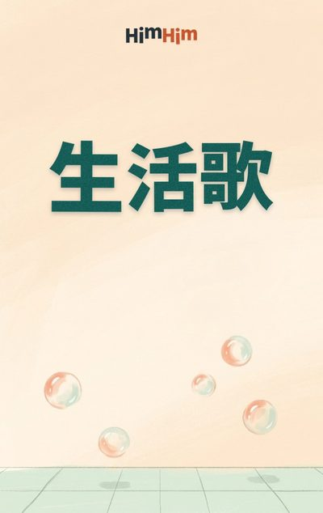
生活歌 — eat, teeth, bath, toilet, bottle, blanket, feet. Daily words in Cantonese, 25 minutes, and the only card aimed squarely at his age.

The best English speech input you own: slow, one clear voice, every duration exact.
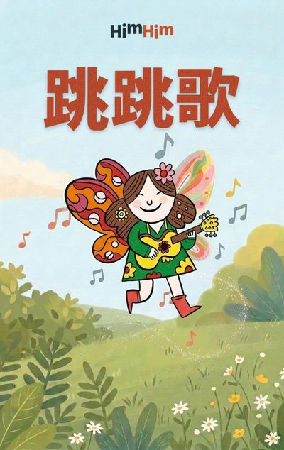
跳跳歌 — 15 short Hong Kong action songs, home language, built to sing along to. The first five are under two minutes each.
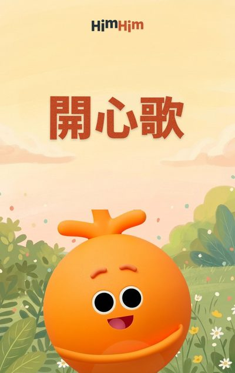
開心歌 — his happy album: colours, dinosaurs, teddy bears, tidying up. Short, bright songs, and he will recognise the tunes from the app.
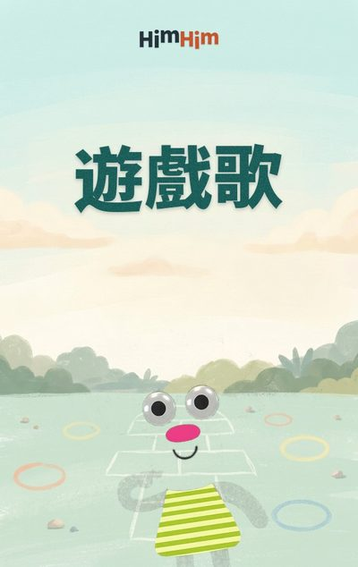
遊戲歌 — movement songs: warm up, catch, jump, ice cream, car rides. Use it when he is restless.

精選歌 — the loose ones: 早晨歌, 拜拜歌, 排隊歌, the postman, the festivals. Completes his 100-song catalogue alongside the five albums.
交通工具 — every vehicle named and sounded: bus, taxi, tram, ferry, MTR, fire engine, ambulance, police car. Highest-interest vocabulary he has.

社區英雄 — firefighter, doctor, postman, farmer, the pandemic helpers. Names the job and thanks them; the concrete nouns he notices in the street.

動物朋友 — four dinosaurs plus panda, lion, forest and sea. Dinosaurs do the describing (big, three-horned, long-necked), the animals do the naming and the noises.

認知歌 — fruit, shapes, face, food, swimming, one category per song. Single words with a picture behind each one.

動作歌 — clap, jump, turn, left hand, right hand. He can do it before he can say it, which is the order imitation comes in.
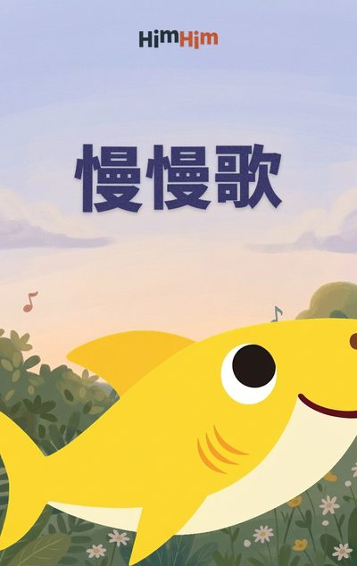
慢慢歌 — the same channel's slower, wordier songs. For winding down and hearing tone, not for joining in yet.

Acoustic, unhurried, traditional rhymes. Durations within 3 seconds.

Action songs — he can do them before he can say them.

Same acoustic feel, with call-and-response built in.
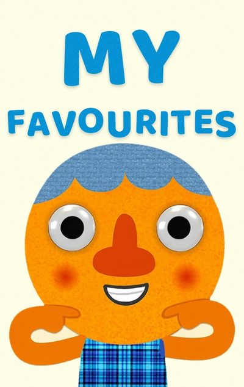
Your six plus routines and body parts. Five match the card to the second.

Ten Noodle & Pals verb songs — Super Simple's own recordings, one verb each, and a gesture to copy on every line.

Naming and sound imitation, ending in Old MacDonald.

Yes/no and choosing, usable at the table tonight.
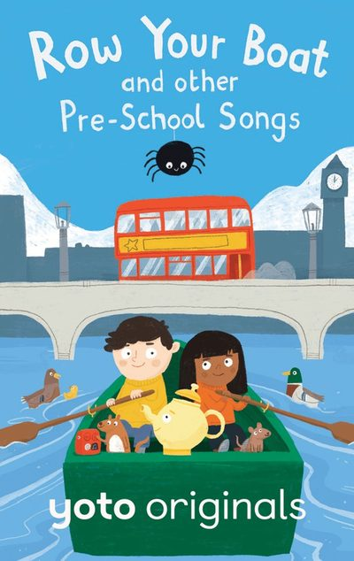
Action songs — he does the rowing long before he can say the line, which is the order imitation comes in. Recordings differ from the card.

Sequence songs: every verse repeats the one before, so the repetition is built in and there is a pause where the next word goes. Yoto Original, so recordings differ.

Super Simple, animal names and sounds. The Old MacDonald pause — animal sound, then silence, then he tries — is the best late-talker move in the whole library.
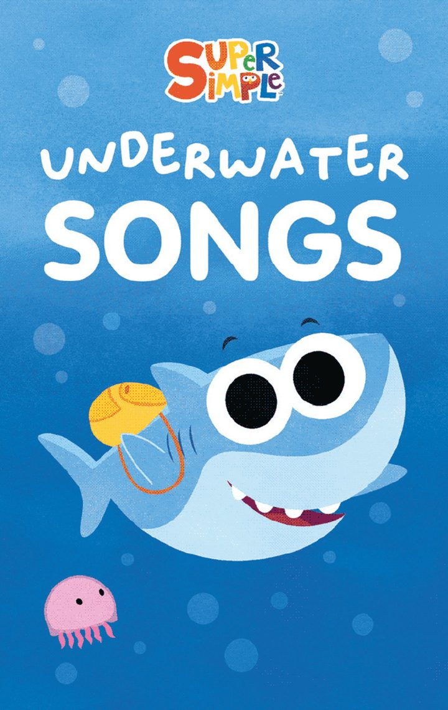
Sea nouns, colours and counting, one idea per line. Finny uploads run slightly long.

Low word density by design, but the same routine words at the same time every night is how they stick. End of the day, not teaching.
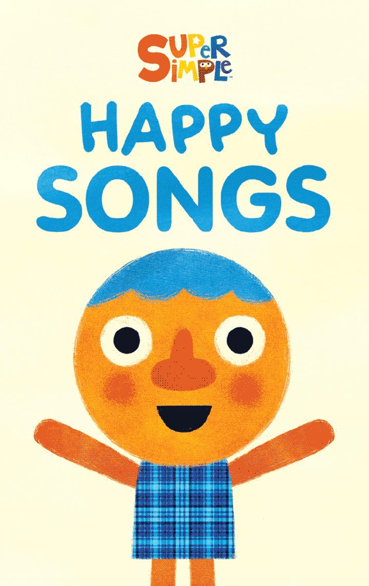
13 of 14 durations match exactly. Feelings, greetings and "here you are, thank you" — singable versions of the therapy targets.

聖誕歌 — his Christmas album, in Cantonese. December only, and the most story-like of his set.

Same quality as the other Super Simple cards, with festive nouns he will hear everywhere in December. Shelve it in January.
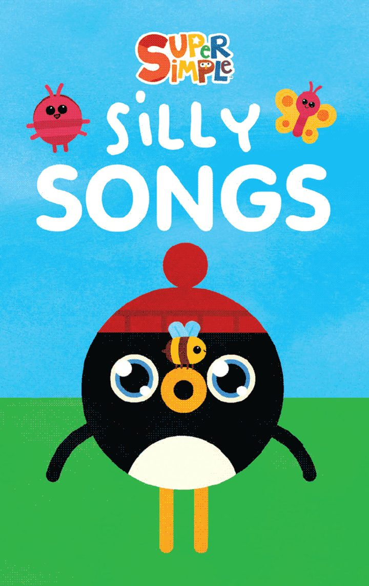
Nonsense and wrong words. Not vocabulary — but spotting the wrong word is prediction, and prediction is what fill-in-the-blank singing runs on. In the top 20 because he asks for it.

One routine a week: shoes, teeth, hands, bath, tidy, bed. Second shelf because the Cantonese routines card already does this in his home language.

What EI SLPs actually name, with a language target per track. A survey of the cards above rather than a target of its own.
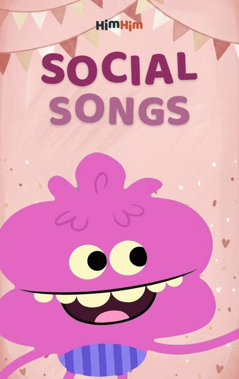
Name, please, turns, thank you, bye — whole phrases, so it lands after single words and routines, not before them.
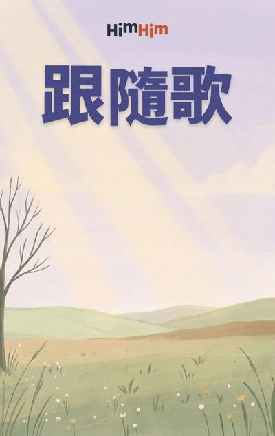
跟隨歌 — his faith album. Wordy, and one track runs twelve minutes; right for later, not for two.

Names the feeling, then gives him a way to settle. Emotion words are the last to arrive, so this is the gentlest of the therapy cards.
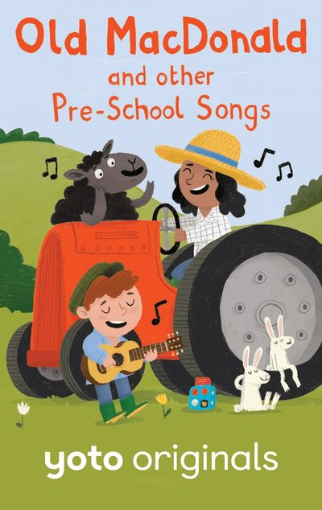
Traditional rhymes, but the weakest of the pre-school trio: same repertoire the Super Simple cards already cover, different recordings.
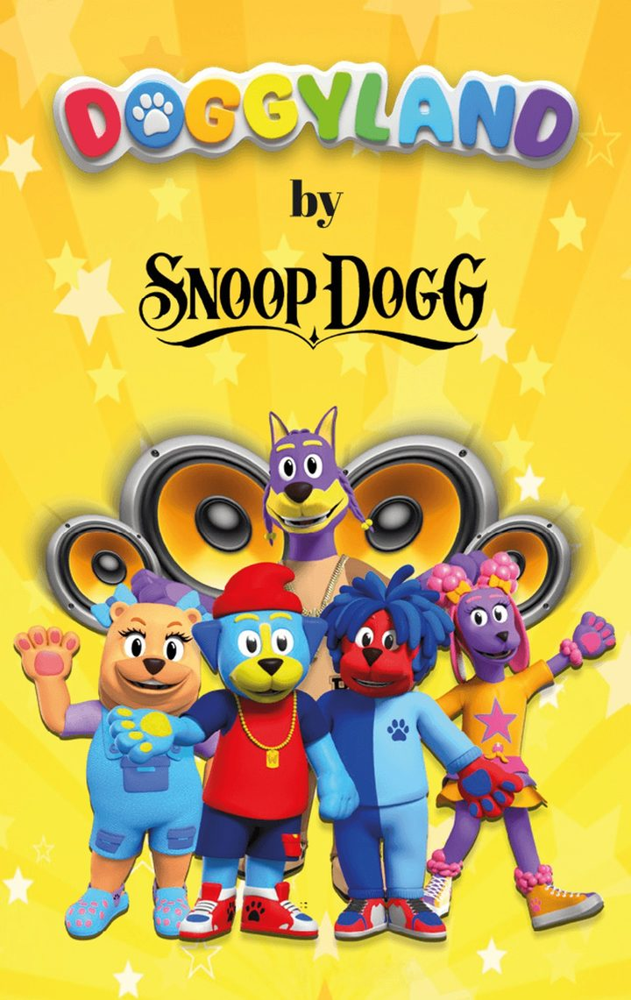
Short, repetitive, affirmations and social scripts. Busier beats than Raffi.

Elmo's World songs, all official, action-based — but Elmo talks fast, so the words blur together.
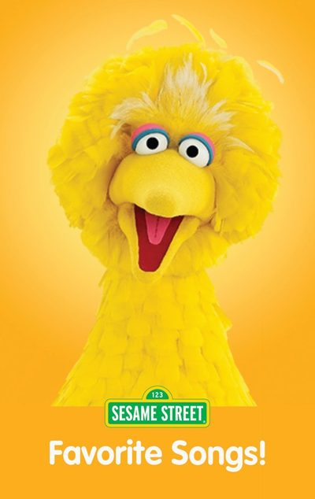
The ABC and number tracks do the language work, but the vocals run fast and overlap. Better once he is talking more.

Concrete vocabulary (dig, lift, spray), but screen-show energy.

Movement first. Use when he is restless, not to wind down.

3-minute pop songs, dense lyrics. Great in the car.
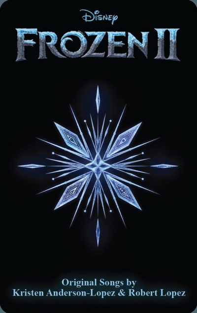
Same: exact songs, not speech material.

Same.

Same.

A few reprises only exist on soundtrack uploaders.
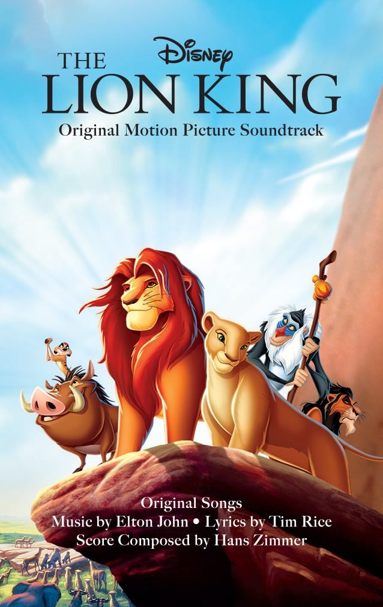
Includes tense score cues; skip those at bedtime.
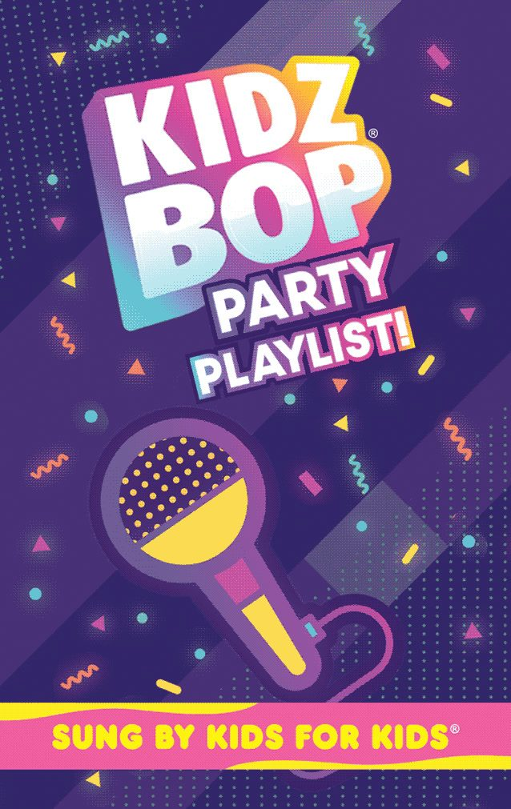
Perfect links, but it is 5–8 material. Shelf it for two years.